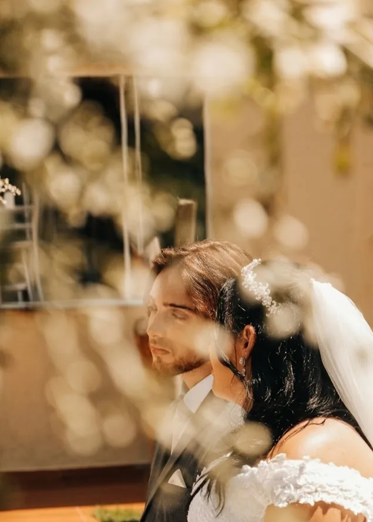

Fotografia
Casamentos, infância, retratos, ensaios, corridas, esportes de areia e eventos registrados com verdade e cuidado em cada detalhe.
Explorar trabalhosFotografia • Audiovisual • Social Media
Transformo momentos, marcas e ideias em imagens com emoção, ritmo e propósito.
O que eu crio
Direção sensível, execução profissional e uma entrega pensada para emocionar pessoas e fortalecer marcas.
Casamentos, infância, retratos, ensaios, corridas, esportes de areia e eventos registrados com verdade e cuidado em cada detalhe.
Explorar trabalhosReels, vídeos corporativos e coberturas que transformam movimento, som e narrativa em experiências memoráveis.
Planejar um vídeoPlanejamento, criação de conteúdo visual e gestão de presença digital para negócios que querem se comunicar melhor.
Fortalecer minha marcaTrabalhos selecionados
Portfólio em movimento
Conteúdo vertical que apresenta ambiente, produto e personalidade com ritmo.
Movimento, intensidade e os melhores momentos registrados em vídeo.
Processos, sabores e bastidores transformados em conteúdo que desperta interesse.

Movimento, narrativa e emoção
em cada produção.
Produção audiovisual
Da ideia ao corte final, cada cena é pensada para prender a atenção, traduzir personalidade e transformar momentos em narrativas.
Olhar atento.
Histórias verdadeiras.
Sobre Gabriel Nascimento
Minha trajetória na fotografia e no audiovisual nasceu da vontade de observar o que muitas vezes passa rápido demais: um olhar, um gesto, uma conquista, a energia de um evento ou a essência de uma marca.
Trabalho com fotografia, vídeo e conteúdo digital unindo sensibilidade e estratégia. Meu objetivo é criar registros que tenham identidade — e que continuem fazendo sentido muito depois da publicação.
“Mais do que entregar imagens, quero entregar a sensação de viver tudo outra vez.”
Vamos criar juntos?
Conte um pouco sobre o evento, projeto ou marca. A resposta chega diretamente pelo WhatsApp.
Pedir orçamento no WhatsApp Atendimento em Jaú e região • consulte disponibilidade